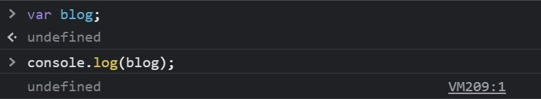
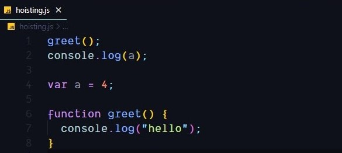
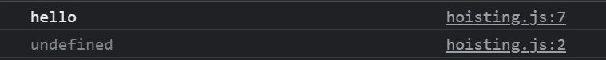

A Deep Dive into Temporal Dead Zone 🧟♂️
Understanding What, Why and how of TDZ in JavaScript.
27th August, 2021
Hello reader, hope you are doing awesome. This blog aims to break down that zombie feeling inside you when you again come across TDZ. We will explore what the temporal dead zone in javascript is and how it works.
Before getting to know about tdz we should be aware of some core concepts in javascript to understand it better, you can treat the below points as pre-requistis oresle feel free to skip and move to Tdz.
TL;DR
- Variable Declaration and Initialization
- Scopes and its types
- Hoisting
- most awaited part TDZ
- wrapping with a quote!
Before ES6 there was no other way to declare variables other than var keyword.
But ES6 brought
us two different keywords let and const, both declarations are block-scoped, which means they are only
accessible within the { } surrounding them. var, on the other side, don’t have any such restriction.
Let us know what Variable Declaration and Initialization
Variable Declaration : process of creating a new variable within any 3 keywords (var, let, const)
var blog;
Above we create a variables called blog. In JavaScript, variables are initialized with the value of Undefined when they are created. What that means is if we try to log the blog variable, we’ll get
Variable Initialization : process of assigning a value to a variable.

So here we’re initializing the blog variable by assigning it to a string and this takes us to next concept scopes.
what a scope means and its types
Scope defines where variables and functions are accessible inside of your program. In JavaScript, there are three kinds of scope - global scope and function/local scope and block scope.
- Global scope : is a scope outside any function or code block. Variables declared in a global scope are visible and accessible everywhere.
- Local or function scope: is a scope inside functions. When you create a function you also create a local scope. Variables you declare in a local scope are accessible and visible only inside that scope, not outside it.
- block scope : is created by using a pair of curly brackets.
Then what is Hoisting ?
This process of assigning variable declarations a default value of undefined during the creation phase is called Hoisting. if you try access one of those variables before it was actually declared, you’ll just get undefined.
But with functions its bit different you will get the entire function when you try to access or log
 The most awaited part 🤩 comes here
Let’s focus on WHAT is Temporal Dead Zone
By now you have understood variable declaration and initialization, scopes and hoisting. Now, let’s finally talk about what the temporal dead zone in JavaScript is. In short, temporal dead zone describes a zone where variables are un-reachable. These are the variables in the current scope. However, these variables were not assigned values yet.
Trying to access those variables inside the temporal dead zone and JavaScript will throw a ReferenceError. This error will say that variable is not defined. One thing to remember. Temporal dead zone exists only for let and const variables. These two variables exist in the temporal dead zone from the start until you initialize them with a value.
Now let’s explore the WHY part of tdz
You know what the temporal dead zone in JavaScript is. Let’s also quickly talk about why it exists. Whenever you run your JavaScript code it goes through two phases. The first phase is called compilation, or creation. During this phase, your code is being compiled into byte code. The second phase is called as execution phase. During this phase, your code is being executed and your variables are assigned their values.
"Everything in Javascript happens inside an Execution Context" - Akshay Saini
During the compilation phase, the JavaScript engine goes through your code. It Collects variables and allocates memory for them, and also for function declarations. At this moment, the variables you declared with var are assigned the default value of undefined. Memory will also be allocated for let and const variables, but no values will be assigned.
Let me ask you this question does let and const are hoisted?
Answer: Yes. To know more. Check out this link Hoisting
This is the reason why the temporal dead zone exists, at least for let and const. In case of let and const, there is a moment when these variables are declared, but not initialized. Remember, declaration happens in the first phase, while initialization in the second.
This means that, during the first phase, let and const exist in the temporal dead zone. This is because they are not initialized with any value. On the other hand, the var is always initialized with the value of undefined by default. That’s why it is never in the temporal dead zone.
When the JavaScript engine enters the second phase it initializes let and const variables. This is the moment when these variables can leave the temporal dead zone. Note that when this happens depends on when you initialize those variables in your code.
So, remember, all variables get hoisted. However, when var variables are hoisted they are also initialized with the value of undefined. When the let and const are hoisted they are not initialized with any value. That is the reason the temporal dead zone exists and why it exists only for let and const and not var.
Wrapping up with especially this quote
Temporal dead zone in JavaScript (TDZ) may sound complicated. It is not. It can be relatively easy. Especially if you understand how variables, scope and their declaration and initialization works.
ES6 is not new stuff but new ways of doing old stuff - kyle simpsonThank you for reading, hope this jargon word (TDZ) never daunts you again and Happy coding 😊